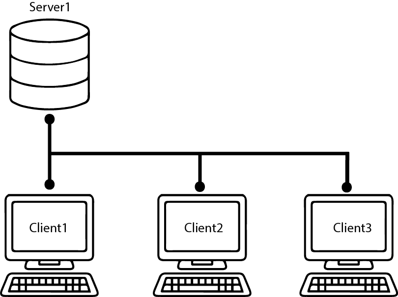

When I began my Netboot Project, I had no clue about DNS, DHCP, TFTP, NFS, Diskless or PXE boot. So let me give you the primer I wish I had.
Why Diskless Network Boot?
In network and system management, there are three large objectives that network boot helps attain.
1)
In the abstract, individual computers should be the same. The admin(presumably you) shouldn’t think about the computers as different, separate machines. Ideally, every computer should be interchangeable. For instance, if a computer goes down, the admin should be able to easily configure a new machine to take its place.2)
Speed. new computers, or newly rebooted computers should come online as fast as possible. For obvious reasons. You might think 'Isn't it faster to boot from disk as opposed to getting the Kernel and OS from the network and writing it?' However, because we will be writing to RAM, it's faster in the end. (exept in the case of LOTS of computers coming online at once)3)
Scalability. New computers should be easy to add to the current system including the software needed for operation.Structure
Network boot helps solve these issues in a few ways. In a typical network, Each computer has its OS written to its hard drive and uses the network only after it has booted like so:

Alternatively, Network Boot does something different. This is where the 'Diskless" part comes in. When we network boot, the client's root directory is mounted to the server via a Network File System(NFS) like this:
Order of Operations
How does this all get done without a Kernel and OS? Lets go through it step by step.
First,
Just like any DHCP request, the BIOS broadcasts a request to the network. If the request is granted, it's on to the second step. If not, the BIOS tries any other 'boot device' i.e. other interfaces.Second,
Once the client has an IP address, It requests a default configuration file and a KERNEL via the TFTP. Once the Kernel installed, configured and working, the client is ready to receive the main OS files.Third,
Now the Kernel can transfer files and use the RAM as a hard disk.Fourth,
Once the client has all the files it needs, the client boots onto its RAM with the NFS as its ~/rootThen,[theoretically] we are running on the RAM and mounted to the NFS.